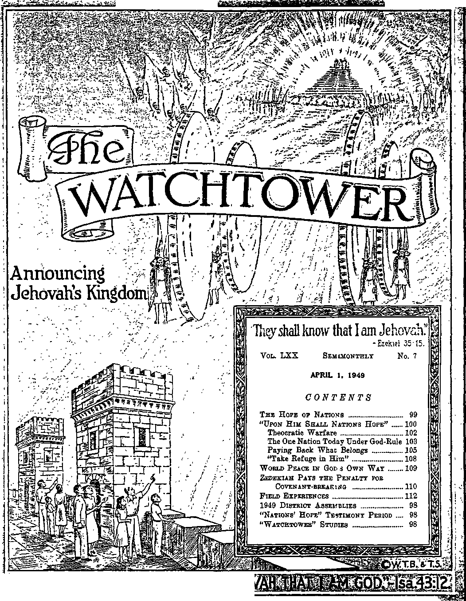

-r',rni
SWWmW
’ L®>ii!iOfliMiEJ3sraaM "5 ;sf <TF?^SW»;.-rjM.w ;
Published Semimonthly Bt
WATCH TOWER BIBLE & TRACT SOCIETY 117 Adams Street » - Brooklyn 1, N.Y., U.S.A.
Officers
N. H. Knorb, President Grant Suites, Secretary
“And all thy children shall be taught of Jehovah; and great shall be the peace of thy children.” • Iiaiah 54:13.
THE BIBLE CLEARLY TEACHES
THAT JEHOVAH Is the only true God, from everlasting to everlasting, and Is the Maker of heaven and earth and Giver of life to his creatures; that the Word or Logos was the beginning of his creation and his active agent In creating all other things; and that the creature Lucifer rebelled against Jehovah and raised the issue of His universal sovereignty;
THAT GOD created the earth for man, made perfect man for the earth and placed him upon it; that man yielded to unfaithful Lucifer, or Satan, and willfully disobeyed God’s law and was sentenced to death; that by reason of Adam's wrong act all men are born sinners and without the right to life;
THAT THE LOGOS was made human as the man Jesus and suffered death in order to produce the ransom or redemptive price for obedient men; that God raised up Christ Jesus divine and exalted him to heaven above every other creature and clothed him with all power and authority as head of God's new capital organization;
THAT GOD’S CAPITAL ORGANIZATION is a Theocracy called Zion, and that Christ Jesus is the Chief Officer thereof and is the rightful King of the new world; that the faithful anointed followers of Christ Jesus are Zion’s children, members of Jehovah's organization, and are His witnesses whose duty and privilege it Is to testify to Jehovah’s supremacy and declare his purposes toward mankind as expressed in the Bible;
THAT THE OLD WORLD, or Satan’s uninterrupted rule, ended AD. 1914, and Christ Jesus has been placed by Jehovah upon the throne, has ousted Satan from heaven, and now proceeds to vindicate His name and establish the “new earth”;
THAT THE RELIEF and blessings of the peoples can come only by Jehovah’s kingdom under Christ, which has begun; that His next great act is to destroy Satan’s organization and establish righteousness completely in the earth ; and that under the Kingdom the people of good-will surviving Armageddon will carry out the divine mandate to “fill the earth” with righteous offspring, and that the human dead In the graves will be raised to opportunities of life on earth.
ITS MISSION
HIS journal is published for the purpose of enabling the people to know Jehovah God and his purposes as expressed in the Bible. It publishes Bible Instruction specifically designed to aid Jehovah’s witnesses and all people of good-will
It arranges systematic Bible study for its readers and the Society supplies other literature to aid In such studies. It publishes suitable material for radio broadcasting and for other means of public instruction In the Scriptures.
It adheres strictly to the Bible as authority for its utterances. It is entirely free and separate from all religion, parties, sects or other worldly organizations. It is wholly and without reservation for the kingdom of Jehovah God under Christ his beloved King. It is not dogmatic, but invites careful and critical examination of Its contents in the light of the Scriptures. It does not Indulge in controversy, and its columns are not. open to personalities.
Notice to Subscribers: Remittances should be sent to office In your country in compliance with regulations to guarantee safe delivery of money. Remittances are accepted at Brooklyn from countries where no office is located, by international money order only. Subscription rates In diiferent countries are stated below in local currency. Notice of expiration (with renewal blank) is sent at least two issues before subscription expires. Change of address when sent to our office may be expected effective within one month. Send your old as well as new address.
Please address the Watch Tower Society In every case.
Offices Yearly Subscription Rate
America (U.S.), 117 Adams St., Brooklyn 1, N.Y.
Australia, 11 Beresford Rd., Strathfield, N.S.W.
British West Indies, 21 Taylor St., Woodbrook, Port of Spain, Trinidad *1.25 Burma, 39 Signal Pagoda Road, Rangoon Rs. 3/8
Canada, 40 Irwin Ave., Toronto 5, Ontario
England, 34 Craven Terrace, London, W. 2
India, 167 Love Lane, Bombay 27 Ba. 3/8
Jamaica, 151 King St, Kingston
Newfoundland, Post Box 521, St. John's
New Zealand, G. P.O. Box 30, Wellington, C. 1
Nigeria, West Africa, P.O. Box 695, Lagos
Philippine Republic, 104 Roosevelt Road,
San Francisco del Monte, Quezon City 2 pesos
South Africa, 623 Boston House, Cape Town
T. Hawaii, 1228 Pensacola St, Honolulu 14
Translations of this journal appear In many languages.
ALL SINCERE STUDENTS OF THE BIBLE who by reason of infirmity, poverty or adversity are unable to pay the subscription price may have The Watchtower free upon written application to the publishers, made once each year, stating the reason for so requesting IL We are f;lad to thus aid the needy, but the written application once each year s required by the postal regulations
Printed in the United States of America
Entered as second-class matter at the post office at Brooklyn, N. Y., under the Act of March S, ISIS.
1949 DISTRICT ASSEMBLIES
That the brethren may arrange their affairs so as to attend their district assembly, announcement is now being made of the time and place of those assemblies for which preliminary arrangements have been completed.
Fort Worth, Texas: May 27-30, La Grave Field
Little Rock, Arkansas: June 3-5,
Robinson Memorial Auditorium
Markham and Broadway Sts.
New Orleans, Louisiana : June 3-5, San Jacinto Club
1422 Dumaine St. (For colored)
Birmingham, Alabama : June 10-12, Alabama State Fairgrounds
Raleigh, N. C.: June 24-26, Raleigh Memorial Auditorium
Detroit, Michigan: July 1-4,
Coliseum, Michigan State Fairgrounds
Portland, Oregon : July 1-4, Public Auditorium
1520 Southwest Third Ave.
Indianapolis, Indiana: July 8-10, Manufacturers Building Indiana State Fairgrounds
Sioux Falls, South Dakota: July 22-24, Coliseum
501 N. Main Ave.
Additional Assemblies Not Previously Announced
Jacksonville, Florida: May 27-30 (For colored)
Sacramento, California: June 10-12, State Fairgrounds
The dates and places for other assemblies will be announced as soon as the information is available. All publishers and persons of good-will are urged to attend these assemblies. Brethren from the Society’s headquarters will serve on the program.
“NATIONS’ HOPE” TESTIMONY PERIOD
How will the nations be able to set their hope now on the great King whom God has raised np to rule the new world unless they learn about him f This is the question that will make each already informed person realize his responsibility during the month of April of taking part in the “Nations' Hope” Testimony Period throughout this month. April brings to a close the four-month campaign for taking 500,000 subscriptions for the Watchtower Society’s magazines in the 22 languages in which they are published. Hence the special offer continues in force, namely, a year’s subscription each for The Watchtower and Awake! together with the premium gift of the latest bound book and booklet, to each taker, at the subscription rate of both for $2.00. All lovers of their fellow man want the God of hope to fill as many others as possible with the joy and peace of believing in the Kingdom hope, and therefore we again remind all Watchtower readers of our readiness to help any that desire to have a hand in this hope-inspiring educational work. Let us hear from all such before this campaign ends, and also let every participant turn in his report at the close of the Testimony Period.
“WATCHTOWER” STUDIES
Week of May 8: “Upon Him Shall Nations Hope,” fl 1-19 inclusive, The Watchtower April 1, 1949.
Week of May 15: “Upon Him Shall Nations Hope,” fl 20-41 inclusive, The Watchtower April 1, 1949.
Vol. LXX
April 1, 1949
No. 7
"And again Isaiah saith—There shall be the root of Jesse, and he that ariseth to rule nations,—upon him shall nations hope.”—Rom. 15:12, Rotherham.
TEHOVAH clearly foresaw the need for the people I of all nations of our day to have a solid hope. J No sooner did he foresee the need than he did something about it. He immediately announced the provision he would make for mankind’s salvation. (Gen. 3:15) For six thousand years since then he has continually pointed forward to that upon which the people should build their hope. Now at this his appointed time, he has produced it, and those today who put their trust in it amid earth’s troubles are made glad.
2 The prominent leaders in religious affairs in Christendom are popularly looked to as God’s representatives and mouthpieces. All reasonable persons would be inclined to think these would point the distressed people to the true hope that will never disappoint. But do they? In answer let us quote from the New York Times in its issue of October 15, 1945. Reporting from Buffalo, New York, for the preceding day, it quotes one of the foremost churchmen of the United States and says: “‘We must remember that the Christian church of America has made this country the Messianic nation,’ said Most Rev. Bishop Henry St. G. Tucker, presiding bishop of the U.S. Episcopal church at the hundredth anniversary of St. John’s Episcopal Church here. ‘How can we expect to aid the progress of Christianity except by raising the level of Christian living in the Christian countries?’ he added. He said ‘the nations of the world look to America for the light of spiritual guidance in a world of darkness.’ ”
s More recently, as reported by the New York Times in its issue of January 6, 1949, the cardinal archbishop of New York city addressed a dinner of Roman Catholics at the Park Lane Hotel. He referred to the difficulties that Catholic Action is running into in Eastern Europe and also paid high tribute to a Roman Catholic architect who built some notable national structures, and then, to quote the Times, “Cardinal Spellman declared that the United States, as ‘the whole world’s hope,’ must not betray the trust of religious and political prisoners in other lands.” (N.Y. Times, Jan. 6, 1949) Religious clergymen, Catholic and Protestant, may claim to trust in Jesus Christ as the Messiah, but their actions and such public statements as those above quoted show they are pinning their hopes to a worldly nation only about 173 years old.
* Undeniably Jehovah God and the religious clergy differ as to what the sure hope for the people of all nations is. In place of standing forth from the general mass of people and courageously telling the truth according to God’s Word, the clergy supinely bow to the politicians and try to tickle the ears of the people with what is popular opinion. In this way the prophecy is fulfilled: “So it has become 'like people, like priest’.” (Hos. 4:9, An Amer. Trans.) Therefore the priest will suffer the very same fate as the people, because they put their hope in a popular but deceptive thing. Every clergyman, who is given formal recognition by worldly governments as being a “minister of the gospel”, ought to know that Jehovah God sets forth His kingdom by his Messiah, Jesus Christ, as the one and only hope for all mankind. They have no excuse for not knowing from world events and from fulfilled Bible prophecy that Jehovah God Omnipotent has now taken his power and begun his kingdom by Christ Jesus for the restoration of a righteous world to this earth. The Holy Scriptures are available to them, and they ought to know that Jehovah God has made no nation of this present evil world to be the hope either of Christianity or of mankind in general. America, the known possessor of the atomic bomb, has now assumed her most important role in world history and has come into a most responsible position before God and man. We admit she has now reached the zenith of her power, but when clergymen say for public consumption that she is “the Messianic nation” and “the whole world’s hope”, they blaspheme and they insult God’s kingdom by Christ Jesus, which kingdom is the true hope.
6 Before the United States of America became what she is today there have been other nations and empires that were comparatively just as mighty and world-important in their particular time. But all these have aged and weakened and have been overthrown or have otherwise disappointed the hopes of the people. No nation or empire on earth today is any exception to this unchangeable rule in political history. The reason is that, without a single exception, all nations are composed of human creatures who are imperfect and dying, and “none can keep alive "his own soul”. (Ps. 22:29) In short order all members of a nation or empire succumb to death, whether emperor or king or governor or the most lowly one of the “common herd”. All members are under a common curse of death, being condemned as sinners in the sight of Almighty God the Creator. He permitted all men to spring from one original man, after this father of our race had sinned and come under sentence of death. When speaking to the Grecian philosophers, the apostle Paul correctly said concerning God: “He made from one every nation of men to live on all the face of the earth, having determined allotted periods and the boundaries of their habitation, that they should seek God, in the hope that they might feel after him and find him.”—Acts 17: 26, 27, Rev. Stan. Ver.
• The Bible shows there is nothing divine or immortal about the political states of this world, nor about their form and their laws. As all nations are of the same sinful, condemned stock, each nation is just as impotent as every other one as to bringing salvation to mankind and a better new world. So, in this day of deceptions, let us not misplace our hope, but may we build up confidence in the omnipotent God’s provision, as described in the next article below.
FROM the Bible it is easy to trace the beginning, growth and development of the nations of men. The word nation is translated from a Hebrew word that comes from the verb meaning “to flow together; to mass”. Hence the term nation means the people as a corporate body, a people massed together under a government. The first Biblical mention of nations is given us in Genesis, chapter ten, which tells of the descendants of Noah’s sons Shem, Ham and Japheth, after the global flood. First telling of the offspring of Japheth, it says: “It was from these that the coast-lands of the nations were populated, country by country, each with its respective language, according to the various clans, nation by nation.” Then, after telling of the offspring of Ham and Shem, the chapter closes, saying: “These were the clans descended from Noah, arranged according to their descendants by nationalities; and from these the nations of the earth were populated after the flood.” —Gen. 10: 5, 20, 31, 32, An Amer. Trans.
2 All this spreading of the nations over the earth took place with Jehovah’s foreknowledge that a special earthly nation would arise, namely, the nation of the sons of Israel. In advance Jehovah arranged for a location for it. The prophet Moses sang of this just before the nation of Israel entered into this assigned land, saying: “I proclaim Jehovah’s Name, I exalt our Glorious God 1 . . . Ask your father, who will inform you, your elders, and they will relate, how the Highest allotted the races, when He divided the sons of Man, fixing the bounds of the nations, with a place for Israel’s sons! For the Lord is kind to His People, to Jacob he measures his share!”—Deut. 32: 3, 7-9, Fenton.
1, 2. How did nations arise? and for which one did God prepare a place?
’ The next time that the Bible mentions a nation after describing the offspring of the sons of Noah it is in connection with the great hope that Almighty God set before the human race. Two thousand years before then, in Eden, he had caused the first ray of hope to shine onto the earth into which sin had now entered. He did so by informing the old Serpent or Devil that God would bring forth from his “woman” a Seed. This Seed or offspring would be the Devil’s implacable enemy and would suffer at the Devil’s hands for this, and yet in the end it would crush that old Serpent’s head. (Gen. 3:15) Abram, who descended from faithful Shem, was a man who held fast to faith in Jehovah God and in this hopeinspiring promise given in Eden. Out of respect for Abram’s faith Almighty God called him to leave his native land for the place God had foreseen for Abram’s descendants, the sons of Israel. Note here the next mention of nation, as we read: “Now Jehovah said unto Abram, Get thee out of thy country, and from thy kindred, and from thy father’s house, unto the land that I will show thee: and I will make of thee a great nation, and I will bless thee, and make thy name great; and be thou a blessing: and I will bless them that bless' thee, and him that curseth thee will I curse: and in thee shall all the families of the earth be blessed.”—Gen. 12:1-3, Am.Stan. Ver.; 18:18.
4 That divine utterance was the first proclamation after the Flood of the gospel message or good news. Under inspiration the apostle Paul so interprets the Scripture record of this covenant or promise to Abraham. Paul says: “And the scripture foreseeing that by faith God would declare the nations righteous
3. When and how did He mention nations In connection with the hope? 4, 5. In whom would all nations be blessed? and through what nation? fore-announced the good news unto Abraham, saying —All the nations shall be blessed in thee," (Gal. 3: 8, Rotherham) But this blessing to all nations would not come by Abraham directly. His Seed or offspring would be the channel through which the blessing would flow, and with this in view Almighty God said he would make a great nation out of Abraham. Hence no nation then existing in Abraham’s day was the designated nation; and this is shown by the fact that Abraham had to fight with Tidal, “king of nations,” and his allies.—Gen. 14:1-1G.
’ The promised “great nation” through which universal blessings would come is no nation on earth today, neither America nor the young republic of Israel. No Gentile and no Israeli of today can dispute this, for when Abraham had shown his unquestioning obedience to God to the point of making ready to offer up his beloved son Isaac in sacrifice, Jehovah by his angel said to Abraham: “In blessing I will bless thee, and in multiplying I will multiply thy seed as the stars of the heavens, and as the sand which is upon the seashore; and thy seed shall possess the gate of his enemies; and in thy seed shall all the nations of the earth be blessed.” (Gen. 22:17,18, Am.Stan. Ver.) Nineteen centuries later God designated which nation should be that Seed of blessing, for God inspired his servant the apostle Paul to write: “Now to Abraham and his seed were the promises made. He saith not, And to seeds, as of many; but as of one, And to thy seed, which is Christ. And if ye be Christ’s, then are ye Abraham’s seed, and heirs according to the promise.”—Gal. 3:16, 29.
9 God’s Word, therefore, makes one thing certain: No nation that has not descended from Abraham in a fleshly sense or in a spiritual sense could be the nation through which Jehovah God, the Greater Abraham, blesses all the families of the earth. To this day it remains the unchanged truth, “Abraham shall surely become a great and mighty nation, and all the nations of the earth shall be blessed in him.” (Gen. 18:18) That nation must come, not only from Abraham, but also through his son Isaac, to whom Jehovah said: “And in thy seed shall all the nations of the earth be blessed.” (Gen. 26:4) It must also come through Isaac’s son Jacob, for, when Jacob had the dream of the ladder reaching from earth to heaven, Jehovah God announced himself to Jacob and said: “And in thee and in thy seed shall all the families of the earth be blessed.” Later, when God changed Jacob’s name to Israel, he said: “I am God Almighty: be fruitful and multiply; a nation and a company of nations shall be of thee, and kings shall come out of thy loins.” (Gen. 28:14 and 35:10,11) This pointed forward to a dynasty of kings to come from Jacob and to culminate in the great Messianic
6. What Une ot descent does God make certain as to that nation? King, Jesus Christ. This was the King whom Jacob meant as he lay upon his deathbed in Egypt and blessed his twelve sons and said to Judah, his fourth son: “Judah is a lion’s whelp: . . . The sceptre shall not depart from Judah, nor a lawgiver from between his feet, until Shiloh come; and unto him shall the gathering of the people be.” (Gen. 49: 9,10) Such a prediction concerning Shiloh to whom the royal scepter was to come indicated that he must be the hope of the people of the nations.
’ It was in Egypt that Jacob’s descendants grew to be a nation. (Deut. 26:5-8) When Egypt turned to oppressing these children of Jacob or Israelites, then Almighty God brought them out by bringing upon Egypt the worst series of troubles since it became a nation. (Ex. 9:24) Under his prophet Moses Jehovah God brought the Israelites to Mount Sinai. There he plainly set before them the opportunity to become the holy nation for his marvelous purposes. Introducing a covenant of law to them, he said to the Israelites: “Now therefore, if ye will obey my voice indeed, and keep my covenant, then ye shall be a peculiar treasure unto me above all people: for all the earth is mine: and ye shall be unto me a kingdom of priests, and an holy nation.” (Ex. 19: 5, 6) When the Israelites agreed to the covenant, Jehovah gave them his written law. They belonged to God because he delivered them from the Egyptian race-exterminators, and now they had his divine law. Thus Israel was a Theocratic nation. No Gentile nation, then existing or yet to come, could claim to be Theocratic and to have its governmental structure and its law from the great Theocrat Jehovah. The inspired psalmist says: “He showeth his word unto Jacob, his statutes and his ordinances unto Israel. He hath not dealt so.■with any nation; and as for his ordinances, they have not known them. Praise ye Jehovah.” (Ps. 147: 19, 20, Am. Stan. Ver.) No, not a single nation of Christendom can claim such an origin for its government.
‘ The Scripture facts multiply to show that ancient Israel was God’s chosen nation which he took out from under Egypt and organized according to his Theocratic will. When the prophet Moses acted as intercessor for Israel he said to Jehovah God: “Consider that this nation is thy people.” (Ex. 33:13) Down till the days of the Christian apostle Paul there was no true Theocratic nation aside from Israel. No other government on earth, not even the Rome of the Caesars, could claim to have derived its origin, its political organization and its laws from the living and true God. Showing the godless standing of the nations of this world, Paul said to Christians who came from such Gentile nations: “Keep in remembrance that at one time ye the nations in flesh 7. How did Israel begin as a Theocratic nation, unlike Christendom? 8, 9. For Israelites, what did It mean to be Theocratic?
who are called Encircumcision by the so-called Circumcision in flesh made by hand, that ye were in that season separate from Christ, alienated from the citizenship of Israel and strangers from the covenants of promise, having no hope and godless in the world.” —Eph. 2:11,12, Rotherham.
’ It is foolish to argue that the Gentile governments of this world have anything divine about their founding and organization so as to be in any way Theocratic. Of all the earthly nations only Israel once occupied that favored position, and the apostle Paul further points up this fact by these words: “What advantage is there then in being a Jew, and what is the use of circumcision? A great deal, from every point of view. In the first place, the Jews were intrusted with the utterances of God.” “For they are Israelites, and to them belong the rights of sonship, God’s glorious presence, the divine agreements [covenants] and legislation, the Temple service, the promises, and the patriarchs, and front them physically Christ came—God who is over all be blessed forever! Amen.” (Bom. 3:1,2; 9:4,5, An Amer. Trans.) So when the Israelites obeyed the law of their Theocratic nation, even in regard to worship, it meant obedience to God. When they supported the national organization, it meant being Theocratic, because it meant supporting Jehovah God as Ruler. He was in reality their King, despite being invisible to them. He had a right to dictate how they should worship, for he is the Most High God, the Source of all right worship, and he had delivered the Israelites from death by the Egyptians to make them his own. He had the right to be intolerant toward false religion among them.
THEOCRATIC WARFARE
10 True, Jehovah God did organize the Israelite nation for warfare, conscripting the able-bodied young men from among them. The first war the nation fought was with the heathen Amal ekites, shortly after the Israelites had been delivered from Egypt and while they were on their way to the mountain of God to receive his written law. We read: “Then came Amalek, and fought with Israel at Reph-idim. So Moses said to Joshua, ‘Pick out some men for us, and hurry out to fight with Amalek, while I will take my stand on the top of the hill, with the staff of God in my hand.’ ” After their victory by God’s help, Moses built an altar to commemorate it. “‘Because a hand has been raised against the throne of the Lord,’ he said, ‘the Lord will have war with Amalek from generation to generation.’” —Ex. 17: 8-16, An Amer. Trans.
11 In Israel it was a Theocratic conscription of young men for warfare, for it was at God’s command.
10, 11. How were conscription of Israelites and their wars Theocratic? The male Levites, however, were exempted from military duty, for God set them aside for his sacred service at the temple. (Num. 1:1-3,45-54) The warfare that the Israelite conscripts fought was Theocratic warfare, for it was in obedience, not to man, but to Jehovah God their King. In a very real sense, then, they acted as the human executioners for God against all the Gentile nations that stood in the way of the divine purposes. They were the armies of Jehovah God, and that explains why He fought and won their battles for them. Once they were not organized for war but were helpless fugitives from Egypt, with the mightily armed Egyptian hosts behind them and the Red sea as a watery barrier before them. They were then shown that a military establishment was not a necessity among them. To quiet their fears of being militarily overwhelmed Moses said: “Jehovah will fight for you, and ye shall hold your peace.” A few hours later Moses led the Israelites in singing this song: “I will sing unto Jehovah, for he hath triumphed gloriously: the horse and his rider hath he thrown into the sea. . . . Jehovah is a man of war: Jehovah is his name. Pharaoh’s chariots and his host hath he cast into the sea; and his chosen captains are sunk in the Red Sea.”—Ex. 14:14 and 15:1-4, Am. Stan. Per.
12 With a miraculous pillar of cloud by day and a pillar of fire by night this warrior God brought the Israelites to the borders of the Promised Land. He cleared a way through the riverbed of the Jordan to bring them into the “land flowing with milk and honey” under the visible leadership of Joshua. Then God set the Israelites to rooting out the Gentile nations occupying the land which he had covenanted with Abraham to give to his descendants. Hence this was no unjustified war of aggression, for God is not guilty of such aggression. The earth is his, to promise and to give it to whom he wants. It was Theocratic warfare that the Israelites waged. They were justified in carrying it on against the devil-worshiping inhabitants of the land, because God’s command to them justified the Israelite youth in fighting and executing his judgments upon those who did not worship him and who opposed his people.
13 God’s own part in the warfare stamped it as Theocratic. Moses had told the Israelites just before they crossed over into the Land: “Jehovah your God who goeth before you, he will fight for you, according to all that he did for you in Egypt before your eyes.” (Dent. 1:30 and 3:22, Am. Stan. Ver.) It turned out just that way, for concerning the military campaigns of Captain Joshua we read: “Jehovah fought for Israel.” “And all these kings and their land did Joshua takei at one time, because Jehovah, the God of Israel, fought for Israel.” (Josh. 10:14,
12, 13. Why was their subduing of Palestine not unjustified aggression? 42, Am. Stan. Ver.) Later, therefore, Joshua ascribed the victory all to God, saying: “Ye have seen all that Jehovah your God hath done unto all these nations because of you; for Jehovah your God, he it is that hath fought for you. One man of you shall chase a thousand; for Jehovah your God, he it is that fighteth for you, as he spake unto you.”—Josh. 23:3,10, A.N.P.
14 As the land was a God-given possession according to His covenant and as he was their King and righteous Military Commander, the Israelites of old had every reason to be patriotic. Theirs was a patriotism for the typical Theocratic government. The strength and security of that miniature Theocracy rested, not on a military establishment which was the equal of all their combined enemies, but on Jehovah the invincible Theocratic Warrior. King David, who was said to have ‘fought the battles of Jehovah’, enunciated this truth for God’s true people today, saying: “Some are strong through chariots and some through horses, but we, through the name of the Lord our God. They will bow down and fall; but we shall arise and stand upright.”—Ps. 20:7, 8, An Amer. Trans.
15 Not one nation on earth since ancient Israel clear down through World War II has any record or proof that Jehovah God has fought for it and given it victory. But repeatedly Jehovah fought for his miniature Theocracy. When the aggressive nations of Ammon, Moab and Mount Seir united their forces and marched against Jerusalem in the days of good King Jehoshaphat, a Levite prophet rose up at the temple and said to the Theocratic people: “Ye shall not need to fight in this battle: set yourselves, stand ye still, and see the salvation of Jehovah with you, 0 Judah and Jerusalem; fear not, . . . for Jehovah is with you.” So next morning, with Levite singers leading the march, they sallied forth and saw the destruction that Jehovah God wrought upon these allied enemies. (2 Chron. 20:17-30, Am.Stan. Ver.) Yes, the remaining nations round about feared “when they heard that Jehovah fought against the enemies of Israel”. About 175 years afterward, in the days of faithful King Hezekiah, Jerusalem was again threatened, this time by the undefeated armies of the expanding Assyrian empire. By his prophet Isaiah Jehovah hurled defiance at the Assyrian military hosts, saying: “I will defend this city to save it, for mine own sake, and for my servant David’s sake.” Then we read: “And the angel of Jehovah went forth, and smote in the camp of the Assyrians a hundred and fourscore and five thousand; and when men arose early in the morning, behold, these were all dead bodies.”—Isa. 37: 35, 36, Am. Stan. Ver.
18 These instances of Theocratic warfare before the days of Christ were prophetic patterns of how 14, 15. What showed whether security rested on a military establishment? 16. In this most militarized age where is the real hope of defense?
Jehovah God will fight the universal war of Armageddon against all the nations of this earth at this end of the world. He is not the hope of any of such nations, for they trust in their military might and political alliances and they turn these against Jehovah God and his kingdom. But those persons today who do know and trust in the name of the Most High God wait for him to fulfill the prophecy concerning Armageddon: “Then shall Jehovah go forth, and fight against those nations, as when he fought in the day of battle. And Jehovah shall be King over all the earth: in that day shall Jehovah be one, and his name one.” (Zech. 14:3,9, Am. Stan. Ver.) Christ Jesus will be his trusty Warrior. (Rev. 19:11-16) Therefore, let all men of good-will know that in this “atomic age”, in this the most militarized period of all human history, Jehovah God with his warrior Son Christ Jesus is the only hope for real defense, victory, deliverance and freedom.
THE ONE NATION TODAY UNDER GOD-RULE
” Israel has ceased to exist as the Theocratic nation for whom Jehovah fights. Their privilege of being such ceased to exist when they rejected the One whom He sent them to be their King, namely, Christ Jesus, the promised “Seed of Abraham”. Just five days before the Passover of A.D. 33, this Jesus rode into Jerusalem amid the jubilant throng of persons of good-will, but the faithless Jews failed to recognize the fulfillment of the prophecy, to which the apostle John refers, saying: “And Jesus, when he had found a young ass, sat thereon; as it is written, Fear not, daughter of Sion: behold, thy King cometh, sitting on an ass’s colt.”—John 12:14, 15; Isa. 62:11; Zech. 9: 9.
18 This Jesus, born at King David’s birthplace, Bethlehem-judah, was descended from David the son of Jesse. He is the “root of Jesse” of whom Isaiah 11:10 prophesied long after David’s death: "Therefore there shall be in that day, the root of Jesse, even he who riseth up to rule nations: in him nations will put their trust, and his resting place shall be glorious.” [Septuagint Version translation by C. Thomson; also by S. Bagster) Under inspiration Paul the apostle applies this prophecy to Jesus Christ by quoting from the Septuagint Version of the ancient Scriptures and saying: “And again Isaiah saith— There shall be the root of Jesse, and he that ariseth to rule nations,—upon him shall nations hope.” (Rom. 15:12, Rotherham) Only a remnant of the natural Israelites put their hope in Jesus Christ as the promised “root of Jesse”, the Messianic King. Therefore Jehovah sent the good news about him to the Gentile nations. There the honest-hearted lovers of righteousness who were groping after the living
17, 18. How did all nations begin to be blessed In Abraham? and true God exercised faith in God’s message and accepted his Son Jesus Christ as the one upon whom the nations must hope as the King from God. Because of their faith those Gentile believers, together with the faithful Jewish remnant, were declared righteous in God’s sight. Thus in Abraham all the nations began to be blessed through the Seed of Abraham, Christ Jesus. (Gal. 3:16) Being justified because of their faith in him as their Savior and Ransomer, they belonged to Christ. Hence, as he is the original Seed of Abraham, they became part of the seed of Abraham. (Gal. 3: 27-29) Abraham of old was merely a prophetic type of their heavenly Father, Jehovah God.
12 Together with Christ Jesus, these justified believers out of all nations were made God’s one “holy nation”, begotten with his holy spirit. Any doubt about this is brushed aside, for the inspired apostle Peter writes such believers to say that natural Israel was dropped from being Jehovah’s Theocratic nation but that “ye”, the justified Christians whom he addresses, “are a chosen generation, a royal priesthood, an holy nation, a peculiar people; that ye should shew forth the praises of him who hath called you out of darkness into his marvellous light: which in time past were not a people, but are now the people of God.” (1 Pet. 2:9,10) This body of spirit-begotten Christians out of all nations has taken the place of natural Israel as Jehovah’s Theocratic nation. They are a spiritual nation, of whom God has made Christ Jesus the King and Head. Necessarily their earthly nationality is made subordinate to their Christian citizenship in heaven. No political nation of Christendom, nor even all Christendom, can claim to be a “Christian nation”. There is only one such nation, not many, and it is spiritual, heavenly, non-political, and so not divided within itself over the politics or political ideologies of the nations of this world. No political ruler and not even the highest judicial body of a nation of this world can pronounce or baptize it a “Christian nation”. The offering of prayers by Protestant, Jewish and Catholic clergymen at the inauguration of a nation’s chief executive and his taking the oath of office with his hand on the Bible and then kissing the Bible does not make his political government or his nation “Christian”.
20 If any nation claims to be Christian and if the political and judicial authorities insist upon this claim, then they obligate the entire nation, including themselves, to act as Christians and to follow the law and example of Christ as recorded by his apostles and disciples. So when they deal with us, we have the right to insist that they treat us according to the law of Christ, even though we do not expect
19. How many “Christian” nations are there, and why so?
20, 21. Why cannot the United States be a Christian nation? that they will. When any nation claims to be Christian, it is equal to saying it is a Theocracy, as ancient Israel was; but no nation of this world can produce the facts to prove it is such. God’s “holy nation”, of which Christ Jesus is the Head and King of kings, is His devoted congregation or "church”. The “church” is that nation; the nation is the “church”. Hence, despite the ruling by the U.S. Supreme Court years ago that “this is a Christian nation”,* the nation’s very Constitution forbids it to be such. Note the decision on the case of Everson versus Board of Education, 330 U.S. 1, where the Supreme Court interpreted the First Amendment of the Constitution and said:
21 “Neither a state nor the Federal Government can set up a church. Neither can pass laws which aid one religion, aid all religions, or prefer one religion over another. Neither can force or influence a person to go to or to remain away from church against his will or force him to profess a belief or disbelief in any religion. . . . Neither a state nor the Federal Government can, openly or secretly, participate in the affairs of any religious organizations or groups, and vice versa. In the words of Jefferson, the clause against establishment of religion by law was intended to erect ‘a wall of separation between church and State’. . . . We renew our conviction that 'we have staked the very existence of our country on the faith that complete separation between the state and religion is best for the state and best for religion.’ ”
22 How, then, could any non-Theocratic nation be “the Messianic nation”! (Page 99 1J2) In a truly Christian nation all of its citizens are the undivided congregation of God, and the national government upholds the law of God as given through his Son and it upholds and enforces the one true worship of God as exemplified by Christ Jesus. It does not tolerate within the “nation” the many conflicting religions and political ideologies of this world, but maintains complete unity of the faith toward God and obedience toward Him rather than men. Who will say that any earthly political nation matches this Scriptural pattern of a “Christian nation”! Not one. It is not and never was God’s purpose that the true Christian nation should be earthly. It is heavenly, spiritual, and absolutely separate and distinct from any of the political governments of this world.
22 The above-quoted decision of the U.S. Supreme Court is very unlike the decision of the first political king on earth, namely, Nimrod, the grandson of Hain the son of Noah. He tried to palm off a counterfeit theocracy upon the people of his dominion. How so?
• U. S. Supreme Court decision in Church v. United States, 143 U. S. 457, 471.
22. How does a Christian nation operate, and Is It earthly?
23. 24. (a) How did Nimrod and the Pharaohs and Caesars set up counterfeit theocracies? (b) So how did the Herodlans test Jesus? Because he not only made himself king over them by violent means but also exalted himself as their god, to be worshiped instead of Jehovah God. Concerning Nimrod we read, at Genesis 10:8-10: “And Cush begat Nimrod: he began to be a mighty one in the earth. He was a mighty hunter before Jehovah: wherefore it is said, Like Nimrod a mighty hunter before Jehovah. And the beginning of his kingdom was Babel, and Erech, and Accad, and Calneh, in the land of Shinar. Out of that land he went forth into Assyria, and builded Nineveh.” (Am. Stan. Ver.) Thus Nimrod violated God’s everlasting covenant respecting the wanton shedding of blood. He was a political king and a mighty hunter “against Jehovah”. (McClintock & Strong’s Cyclopedia, Vol. 7, page 109) He lifted himself up as a god in whom the people should hope and trust for protection, instead of Jehovah. By doing so Nimrod made the political ruler of the state a god and made a theocracy out of the state. This signified that, if his subjects disobeyed the political head of the state, it meant disobeying god.
24 The Pharaohs of Egypt likewise gave a theocratic appearance to the political state by representing themselves as gods and requiring the Egyptians to worship them as such. Then the Caesars of Rome gave a theocratic twist to the Imperial government by being deified, not alone after death, but even during life.* By thus declaring Caesar to be a god, the promoters of emperor-worship were making the government a god-rule or theocracy. This was the state of matters when the party followers of Herod Antipas, a district ruler for Rome over the province of Galilee, came to Jesus at Jerusalem and put him to the test next described: “Then the Pharisees went and made a plot to entrap him in argument. So they sent their disciples to him with the Herodians, to say to him, ‘Master, we know that you tell the truth, and teach the way of God with sincerity, regardless of the consequences, for you are impartial. So give us your opinion: Is it right to pay the poll-tax to the emperor, or not?' But he saw their malice, and said, ‘Why do you put me to such a test, you hypocrites? Show me the poll-tax coin!’ And they brought him a denarius. And he said to them, ‘Whose head and title is this?’ They answered, ‘The emperor’s.' Then he said to them, ‘Then pay the emperor what belongs to the emperor, and pay God what belongs to God!’ ” —Matt. 22:15-21, An Amer. Trans.
PAYING BACK WHAT BELONGS
25 By these words Jesus was not trying to say that the emperor or Caesar and God were at agreement
• The then reigning Tiberius and his successor Caligula were not deified, because of unpopularity, but before them Julius Caesar and Augustus and after them Claudius were deified.
25, 26. Can we render Caesar all he asks and not displease God? Why? and that Caesar acted for Jehovah God, with the best of co-operation. Such was not the case. Caesar opposed the living and true God. That was the reason why the Herodians tested Jesus on this point. They wanted to get him into difficulty with Caesar and be able to charge him with sedition. A few days after this test, Caesar’s agent, Pontius Pilate, acted as the executioner to put the Son of God to death. So Jesus’ words can in no way be interpreted to mean we can go the whole way with Caesar in his demands and yet not run into conflict with Jehovah God; and that Caesar will never demand anything contrary to God, but that to be obedient to him in all things is to please Jehovah God. On the contrary, to render unquestioning obedience to Caesar means to put this human political ruler above God and it leads to fighting against God.
“When the priest-led mob of Jews yelled, “We have no king but Caesar,” and went along with Caesar’s agent in executing Jesus, they may have paid Caesar their king what Caesar demanded. But were they paying God what belonged to him and what should be paid to him? Jesus’ apostles answered No to this, when they said in prayer to the Lord God: “0 Lord, thou ... by the mouth of our father David thy servant, didst say, Why did the nations rage, and the peoples imagine vain things? The kings of the earth set themselves in array, and the rulers were gathered together, against the Lord, and against his Anointed: for of a truth in this city against thy holy Servant Jesus, whom thou didst anoint, both Herod and Pontius Pilate, with the nations and the peoples of Israel, were gathered together, to do whatsoever thy hand and thy counsel foreordained to come to pass. And now, Lord, look upon their threatenings.”—Acts 4:24-29, Am. Stan. Ver., margin.
27 At the beginning of the fourth century, Caesar Constantine professed conversion to the Roman religious organization that claimed to be “Christian”. But that did not convert “Caesar” into a friend and minister of God. Constantine still retained the heathenish title Pontifex Maximus, meaning Chief Priest, which is contrary to Christ Jesus, who is God’s exclusive High Priest. Also under the title of Pontifex Maximus Constantine called together the religious Council of Nicea A.D. 325 and there he decided religious doctrines contrary to the Holy Scriptures and enforced those unscriptural doctrines by the sword of the political state, with religious intolerance against those who differed from the trinitarian party. So, when Jesus said to pay to Caesar what belonged to Caesar, he did not have in mind any so-called “Christian” Caesar, for Jesus knew that such a kind of Caesar could not exist and never would
27. Did not Constantine's "conversion" alter matters on this point? exist. True, Constantine professed the then popular brand of “Christianity”, but he was still unbaptized down to his falling sick in 337, dying that same year in Nicodemia. The senate of Rome placed Constantine among the gods, and the professing Christians of the East followed up this heathenish custom of ranking the emperor as a god by reckoning Constantine among the religious saints, so that his festival is still celebrated by the Greek, Coptic and Russian religious systems on May 21 of each year.
28 Since the Caesars were deified in apostolic times and down to Emperor Constantine, we ask: Was worship one of the things that belonged to Caesar and that ought to be paid to him just because the Imperial lawmaking body so ruled? If so, then who is God to whom we must pay the things belonging to God? Does our life belong to Caesar? Was it Caesar that laid down his life for Christians, so that all Christians belong to Caesar and his political government to dispose of by man-made laws of the land? Is Caesar the friend for whom we should show that unsurpassable love about which Jesus said: “Greater love hath no man than this, that a man lay down his life for his friends”? (John 15:13) Note some Christian answers:
29 From The Book of Culture, which used to be an American college textbook, we read (page 549): “Rome had become gradually full of people espousing foreign cults, who on demand would swear allegiance to the divine spirit of the emperor. The Christians, however, strong in their faith, would take no such oath of loyalty. And because they did not swear allegiance to what we would to-day consider as analogous to the flag, they were considered politically dangerous.”* And as to surrendering their lives in warfare for Caesar we read from what used to be a 7th grade history book in the public schools of New York city, namely, From the Old World to the New, page 88: “The early Christians were ready to die for their faith. They refused to worship the gods of the pagan Romans. Since they believed in peace, they would not serve in Rome’s imperial armies.”! Yes, they were willing to die for their peaceable faith, but not in Caesar’s imperial armies.
30 Not just because they believed in peace among men did they refuse to take up carnal weapons for Caesar, but because of the more important fact, namely: “Know ye not that your body is a temple of the holy spirit which is in you, which ye have from God? and ye are not your own; for ye were bought
* The Book of Culture, by Ethel Rose Peyser, 1934 edition, page 549.
t From The Old World to the New, by Eugene A. Colligan, president of Hunter College, and Maxwell F. Littwin, principal of New York city public schools, 1932 edition, page 88.
28, 29. What questions did deification of Caesar raise? Show answers. 30. Why could they not take up carnal weapons tor Caesar? with a price: glorify God therefore in your body. Ye were bought with a price; become not bondservants of men.” (1 Cor. 6:19, 20 and 7: 23, Am. Stan. Ver.) Those early Christians could well ask: ‘If I surrender my life in unquestioning obedience to Caesar and lay down my life for him, what life will I have left to pay to God who bought me with the ransom price of his dear Son’s blood? How, then, could I lead a life fully consecrated to God by following in Christ’s footsteps? The Bible tells me, “He laid down his life for us: and we ought to lay down our lives for the brethren.” (1 John 3:16) How could laying down my life for my brethren for whom Christ died harmonize with using carnal weapons for Caesar and killing my brethren in lands against which Caesar makes war?’ The authentic history of the first century tells us that the faithful Christians refused to do anything like that, and this makes it clear to us how they took Jesus’ command to pay Caesar what belonged to him and God what belonged to Him.
81 When Jesus said to render what belongs to Caesar and what belongs to God he used the verb everywhere then in use among Greek-speaking people meaning the “paying” of a debt, or “restoring” of a due of any kind. Hence render really means to pay back. What, then, did Jesus command us to render to Caesar? What must we pay back to him? For one thing, Caesar coined money and he did not accept Jewish coins as tax money; and so we must pay back Caesar his coins that he made and that he required in tax payment. Also through his governmental operations “Caesar” renders us various services and we must therefore pay our taxes. That way we pay him back for the services he renders and from which we get some material benefit, such as postal service, public service utilities and facilities, public schooling, fire prevention and protection, police service, etc. Pay him for the earthly services rendered; but none of such services require or are deserving of the Christian’s worshiping “Caesar”. “Caesar” cannot buy our worship with such things. None of such things provide or purchase for us everlasting life, and none of them are worthy of our lives, so that we should lay down our lives for “Caesar” in any cause. To Jehovah God the Scripture says: “With thee is the fountain of life.” (Ps. 36:9) “Salvation belongeth unto Jehovah.” (Ps. 3: 8, Am. Stan. Ver.) “God so loved the world, that he gave his only begotten Son, that whosoever believeth in him should not perish, but have everlasting life.” (John 3:16) Our lives present and future are from God. He is our God by his creation of us and by his provision for our redemption.
32 And so our lives, our worship, and our righteous
31. (a) What should we pay Caesar? (b> How about our lives?
32, 33. (a) How do we honor the King? (b) Submit to higher powers9 obedience we owe to him, and we must pay them back to him as owing to him, for Jesus his Son said: “Pay God what belongs to God.” Everything in the Scripture supports this command; nothing contradicts it. When the apostle Peter said to Christians, “Love the brotherhood. Fear God. Honour the king,” we note he did not mention Caesar. He meant honoring Jehovah’s anointed King, Christ Jesus, who is the hope of all mankind.—1 Pet. 2:17.
” Jehovah’s King we will pay honor as commanded, for he said: “The Father . . . hath given all judgment unto the Son; that all may honor the Son, even as they honor the Father.” (John 5: 22, 23, Am. Stan. Ver.) Therefore the authority of only this King originates with God. Hence Jehovah God the Father and Jesus Christ the King are “the higher powers” to whom every Christian soul should be subject in obedience to Romans 13:1: “Let every soul be subject unto the higher powers. For there is no power but of God: the powers that be are ordained of God.” When Christian souls loyally subject themselves to Jehovah God and Christ Jesus, they pay back to God what belongs to God.
84 Justinian the Great, emperor of the East A.D. 527-565, is noted for the Body of Civil Law which he caused to be collected. He is known as a “Christian” emperor, but, belying this, this Body of Roman law (not Christian law) opens up with the Imperial creed on the so-called “trinity” and also the Imperial anathema against the then prominent “heretics”.” He was a persecutor both of pagans and of so-called “heretics”. His efforts against the pagans resulted in the forcible baptism of 70,000 persons in Asia Minor alone.t It is this Justinian that declared that the Christian church and the political power of the nations were both of the same origination, God. (Justinian Novel 6, of March 16, 535) To this day the bishop of Rome, who is the pope of Vatican City, enunciates the same religious idea. This he does in order to support the union of church and state which the Roman Catholic Hierarchy are trying to bring about in America and in all other nations.
55 Christ Jesus never agreed -with the pope that the Christian church and the political power of the nations are from the same source, Almighty God. In the mountain of temptation Satan the Devil showed him “all the kingdoms of the world”, including Caesar’s Roman empire. “And the devil said unto him, All this power will I give thee, and the glory of them: for that is delivered unto me; and to whomsoever I will I give it. If thou therefore wilt worship me, all shall be thine.” Jesus recognized these worldly polit-
* See Sehaff's Church History, page 769, volume III.
f See The Encyclopaedia Britannica, Vol. 15, page 600, under Justinian I.
34. Who say church and state are ol the same source, and why? 35. How did Jesus' course show the true answer to this question? ical governments to be, not from God his Father, but from the tempter who was offering him them. But Jesus was determined to pay back to God what belonged to God. Hence we read: “Jesus answered and said unto him, Get thee behind me, Satan: for it is written, Thou shalt worship the Lord thy God, and him only shalt thou serve.” (Luke 4:5-8) No, Jesus did not expect or try to get the nations to hope on him by his accepting the glory, power and kingdoms of this world in payment for worshiping the tempter.
88 Over sixty years later, at the close of the first century, Jesus gave a revelation to his last surviving apostle, John, and in it he disproved the assertion which Justinian I and the popes of Vatican City make that church and political state come from God. First Christ Jesus revealed to John pictorially how “that great dragon”, “that old serpent who is called the devil and Satan,” is cast out of heaven; and then in chapter 13, verse 1, of this revelation John says: “And I saw a beast coming up out of the sea, having seven heads and ten horns, and upon his horns ten diadems, and upon his heads names of blasphemy.” (Douay) Who is this “beast”! The comments of the Murphy edition of the Catholic Douay Version Bible say this beast “is probably the whole company of infidels, enemies and persecutors of the people of God, from the beginning to the end of the world”. The footnote of the Catholic Confraternity Bible edition of 1941 says on this verse: “This beast is the figure of the kingdoms of the world, kingdoms founded on passion and selfishness, which in every age are antagonistic to Christ and seek to oppress the servants of God. Imperial Rome represents this power.”
87 Now showing positively where the political governments of this world derive their power, John next says of this political “beast”: “And the dragon gave him his own strength, and great power. . . . And they adored the dragon, which gave power to the beast: and they adored the beast, saying: Who is like to the beast! and who shall be able to fight with him!” (Apoc. 13:1-4, Douay) Christ Jesus and his apostles were not of that kind to worship and adore the political state.
88 Jesus refused to accept earthly political power from the dragon, Satan the Devil. Now if the Son of God would not accept the Idngdoms of this world from Satan as a gift in payment for recognizing the Devil as a god worthy of worship, then certainly his Father, Jehovah God, would never accept those kingdoms either, even through the pope as intermediary for the dragon, the Devil. Jehovah’s decree concerning the end of this world shows he has never accepted those kingdoms and nations, including Christendom, in spite of all the pope’s spiritual harlotry with such
36. 37. How did Jesus In the Revelation disprove the false claim7 38. How does Jehovah's decree on the world's end also disprove It? political systems. The end of this world will witness the annihilation of all the political systems of rulership of this world. Assuring the Christians of this, Jesus said to his faithful followers: “He that overcometh, and keepeth my works unto the end, to him will I give power over the nations: and he shall rule them with a rod of iron; as the vessels of a potter shall they be broken to shivers: even as I received of my Father.” (Rev. 2:26,27) The time has now come for the fulfillment of Psalm 2: 7-12 concerning Christ Jesus: “Jehovah said unto me, Thou art my son; this day have I begotten thee. Ask of me, and I will give thee the nations for thine inheritance, and the uttermost parts of the earth for thy possession. Thou shalt break them with a rod of iron; thou shalt dash them in pieces like a potter's vessel. Now therefore be wise, O ye kings: be instructed, ye judges of the earth. Serve Jehovah with fear, and rejoice with trembling. Kiss the son [Jesus Christ his King], lest he be angry, and ye perish in the way, for his wrath -will soon be kindled. Blessed are all they that take refuge in him.”—Am. Stan. Ver.
“TAKE REFUGE IN HIM”
39 Therefore the hope and refuge of the nations cannot be in a single kingdom or government of this world, nor in any league or union of them. They have not sprung from Jehovah’s power and authority. No, but he has consigned them all to destruction shortly. Now since the end of the “times of the Gentiles” A.D. 1914 they have been given into the hands of his King Jesus Christ enthroned on Zion, to destroy them completely at the battle of Armageddon. The religious clergy of Christendom shamelessly insult God and his King when they declare that this or that nation or alliance of nations is the only hope of mankind. The clergy do a distinct disservice to the worldly kings and judges by committing spiritual harlotry with them. They boost the self-perpetuating schemes of the rulers and fail to warn them that we have reached the end of this world. They fail to tell them that Almighty God commands them to yield their sovereignty to Christ Jesus, whom He has made King of the righteous new world, and that they must do this so as to avoid God’s fierce wrath and destruction at Armageddon. It is not strange, then, that to date around thirty nations of Christendom have officially recognized the new republic of Israel, because it has become one of the nations of this world. But none of these so-called “Christian” nations has recognized the King of spiritual Israel, 39. How do clergymen Insult God and do disservice to world rulers? whom God enthroned as King of the new world A.D. 1914 and whom Jehovah’s witnesses have persistently proclaimed since then.
40 The kingdom of God by Christ Jesus is the hope and refuge of all men of good-will. The “holy nation” of which Christ Jesus is the Head and King of kings is now the only nation that Almighty God has created and authorized for his good purpose. The members of this “holy nation” are taken out from all worldly nations, kindreds, and languages. They will sit with Christ in his heavenly throne and will reign with him a thousand years for the eternal blessing of all the families of the earth. Only a faithful remnant of this “holy nation” are yet on earth. Although they are but an insignificant minority, they courageously exalt Jehovah’s King, Christ Jesus, as the one in whom all the people of all nations must hope if they want everlasting life in joy, peace and plenty on earth under a perfect government.
41 The King is the great Signal whom Jehovah God has planted on Mount Zion and to whom all seekers of life, truth and righteousness must assemble for protection and preservation through Armageddon. The remnant thus exalt the King as the divinely provided hope, that all people may see and gather to the great Signal. They do so in obedience to God’s command: “Raise a signal over the peoples.” This, then, is the day that the prophecy is undergoing its final fulfillment: “It shall come to pass on that day that the root of Jesse [namely, Christ Jesus], who will be standing as a signal to the peoples—to him will the nations resort, and his resting-place will be glorious.” (Isa. 62:10 and 11:10, An Amer. Trans.) Let the distressed peoples look up above the collapsing nations to which the religious clergy are pointing and let them see Jehovah’s glorious Signal. It is “Christ: who was foreknown indeed before the foundation of the world, but was manifested at the end of the times for your sake, who through him are believers in God, that raised him from the dead, and gave him glory; so that your faith and hope might be in God.” (1 Pet. 1:19-21, Am. Stan. Ver.) Hence study God’s Word, believe and heed it, and assemble to his great Signal with all the rest of the people of good-will. Your hope will then never be disappointed. After all the great multitude of good-will have been gathered out from all nations, kindreds, people and tongues, then destruction will sweep this old world away, but you will be safe.
40. Who are God's "nation" now, and what do they do as such? 41. What now is to be done regarding God’s Signal, and why?
I will sing of the lovingkindness of Jehovah for ever: with my mouth will 1 make known thy faithfulness to all generations. For I have said, Mercy shall be built up for ever; thy faithfulness wilt thou establish in the very heavens.—Psalm 89:1, 2, A.S.V.
prophet Micah (5:2) foretold he would be born, God caused his mighty angel from heaven to announce this prophecy: “Behold, I bring you good tidings of great joy, that shall be to all the people: For, this day, is born to you a Saviour, who is Christ the Lord, in the city of David.” Immediately following that prophecy concerning great joy for all the people, a host of angels joined in the song of praise, which was heard by shepherds. Truly the words of that song were prophetic, because they foretold the day when the people would be at peace and when Jehovah God would bring them peace through his beloved One who was born that day in the natal city of David. The angels sang: “Glory to God in the highest; and on earth peace to men of good will.”—Luke 2:10-14, Douay.
At the conclusion of the ftbattle of that great day of God Almighty” that great prophecy must be fulfilled. God will fight for peace, and then peace will be on earth forever; and this he will do by his mighty Warrior Son, Jesus Christ. Like a mantle of light peace will cover the earth, and goodwill toward men will be permanently exercised. Consequently, men who presumptuously try to run ahead of Jehovah God and to call for the establishment of peace by their human arrangements are an abomination in His sight.
Under the peaceful rule of Christ Jesus there will be no officials who will collect money by taxation and then loan that money to the farmer with a view to making the farmer a serf at last. There will be no more the harsh and oppressive government agents to browbeat and put the people in fear and harshly judge and misrule them. The battle of Armageddon will end all oppression. That is what Psalm 72:4 means when it says: “He shall judge the poor of the people, he shall save the children of the needy, and shall break in pieces the oppressor.” No more will people be put in fear of losing their homes that they have builded at great effort and sacrifice, nor will they be compelled to destroy portions of their crops, and their animals, in order to keep up higher prices fixed by commercial exploiters. A reflection of what is coming is found in Isaiah’s words: “And they shall build houses, and inhabit them; and they shall plant vineyards, and eat the fruit of them”; to which words Micah adds; “And none shall make them afraid.”—Isa. 65:21; Mic. 4: 4.
How well the people know that small property owners have long been oppressed by those who have religious authority, political power and financial strength! The wage earners have been treated unjustly concerning their wages. The widows and the orphans have been oppressed, and the hand of the oppressor has been upon all the weaker ones in every nation. Such oppression has been aided and abetted by those religious leaders who have called themselves by the name of Christ. (Jas. 2:6, 7) But under the administration of God’s righteous government by Christ all oppression must stop, because the Ruler will reign in righteousness. No oppressor will be permitted among the people any longer. (Zech. 9:8) Concerning the time that he comes to his temple for judgment proceedings Jehovah God says: “I will come near to you to judgment; and I will be a swift witness against the sorcerers, and against the adulterers, and against the false swearers, and against those that oppress the hireling in his wages, the widow, and the fatherless, and that turn aside the sojourner from 109
LET all the people who want to see a righteous world-government established over the earth now be calm and hearken to sacred prophecy. Cease fighting or quarreling over immaterial matters. No political party can bring mankind relief and happiness. No religious organization of Christendom can bring what you desire. In fact, no human organization can bring you any real blessing, for all such things will and must soon pass away. The world crisis is here, and the all-important question is regarding God’s kingdom of righteousness and the relationship you bear to it.
Christ Jesus, installed as acting King A.D. 1914, is the righteous chosen Servant of Jehovah God and to him Jehovah has committed the rulership of the new world. As to him Jehovah says through his prophet Isaiah: “Behold, my servant whom I have chosen; my beloved in whom my soul is well pleased: I will put my spirit upon him, and he shall declare judgment to the nations. ... A bruised reed shall he not break, and smoking flax shall he not quench, till he send forth judgment unto victory. And in his name shall the nations hope.” (Matthew 12:18-20, Am. Stan. Ver., margin, as quoting Isaiah 42:1-4) So you can find no hope of relief by looking to the rulers of this wicked world, but above is the positive statement of God Almighty that in the name of Christ Jesus, the Rightful Ruler, the believing people of all nations will hope. Just why will they hope in his name? The same prophet, Isaiah, answers: “For unto us a child is born, unto us a son is given: and the government shall be upon his shoulder: and his name shall be called Wonderful Counsellor, The mighty God, The everlasting Father, The Prince of Peace. Of the increase of his government and peace there shall be no end, upon the throne of David, and upon his kingdom, to order it, and to establish it with judgment and with justice from henceforth even for ever. The zeal of the Lord [Jehovah] of hosts will perform this.”—Isa. 9:6, 7.
Yes. Jehovah God will have world peace, and have it in his own way. And when he brings peace, it will come to stay. It should be plain, to all who think, that there could be no real peace on earth until wickedness is completely put down. While unrighteousness rules, some will be taking advantage at the expense of others. The strong survive for a time, and fall when another stronger one rises up. Disorder, strife, oppression and murder have thus ruled for millenniums, because Satan, the wicked one, has been the “god of this world”. There must come One greater and stronger than Satan the Devil, One who acts in exact harmony with Almighty God and under his direction and who will joyfully obey his commandments. Then in peace and righteousness he will draw the people of good-will to him. Long ago Jehovah God foretold by his prophets the coming of this mighty One. This One, who would be the peacemaker for the people between themselves and especially with God, must also be the Redeemer of humankind.
Hence it was that Jehovah God arranged for his beloved Son to leave the courts of heaven and be born as a male child, then grow up to manhood’s estate, suffer death to provide the price of redemption for man, but be raised from the dead and become the great Ruler of the new world and establish peace for all time among men. Therefore, when Jesus was born at Bethlehem-judah, where God’s
his right, and fear not me, saith Jehovah of hosts.”—Mal. 3 : 5, Am. Stan. Ver.
As for the poor, the administration of that Theocratic Government will be favorable to them: “With righteousness shall he judge the poor.” (Isa. 11:4) Everyone will be compelled to deal fairly with his neighbor or take the sure consequences. “Thus hath Jehovah of hosts spoken, saying, Execute true judgment, and show kindness and compassion every man to his brother; and oppress not the widow, nor the fatherless, the sojourner, nor the poor; and let none of you devise evil against his brother in your heart.” (Zech. 7:9, 10, Am. Stan. Ver.) The time to start doing this is right now.
Under present worldly governments people who produce nothing lie upon their beds and work out schemes to defraud their fellow men. Such practice will not be let exist under the righteous government of Jehovah God by Christ. None of schemes like those will be let mature. Then there will be no theft of lands with oil deposits and other like crimes committed. There will exist no more cruel corporations called trust companies and cartels to burden the people unjustly. Says Jehovah’s Word: “Woe to them that devise iniquity, and work evil upon their beds! when the morning is light, they practise it, because it is in the power of their hand. And they covet fields, and take them by violence; and houses, and take them away: so they oppress a man and his house, even a man and his heritage.” (Mic. 2:1, 2) What do they care for others’ heritages?
Ah, the rule of the new world under Jesus Christ will not only bring lasting peace and prosperity but also give the people liberty from sin, Devil and death and lead them fully into the paths of righteousness and bestow upon them everlasting life here upon a paradise earth. Said the New World’s Ruler: “The hour cometh, in which all that are in the tombs shall hear his voice, and shall come forth; they that have done good, unto the resurrection of life; and they that have done evil, unto the resurrection of judgment.” (John 5:28, 29, Am. Stan. Ver.) And, at 1 Corinthians 15:25, 26, we are told: “He must reign, till he hath put all enemies under his feet. The last enemy that shall be destroyed is death.” Beloved dead ones will return from the graves, and all who love God and his King will then walk together amid the flowers beside the peaceful waters, singing together the praises of the Most High God. Tears of bitterness will cease to flow, and the fear of death will disappear forever. In matchless symbolic phrase the apostle John says: “God shall wipe away all tears from their eyes; and there shall be no more death, neither sorrow, nor crying, neither shall there be any more pain: for the former things [of this present evil world] are passed away.” —Rev. 21:4.
The battle of Armageddon, which is just ahead, will open the gates of that glorious, righteous rule of the new world, and that rule will be seen and felt throughout the earth. Because of this great change for good that is just at hand Jehovah God commands his witnesses on earth today to tell all nations that Jehovah God by his King Christ Jesus reigns, and that “the world also shall be established that it shall not be moved: he shall judge the people righteously”. (Ps. 96:10) Hence Jehovah’s witnesses are now telling the nations.
Do you desire that New World rulership and the blessings it will bring? Regardless of what other men might want, Christ Jesus is now the rightful Ruler of the New World and is going to rule it in righteousness. All the wicked he will destroy. All the people will have an opportunity to choose to serve Satan the Devil and be destroyed, or to serve Jehovah God and his King and live forever. The time is here for you to choose. May every Watchtower reader who sincerely desires to see the New World rule in justice and who desires to enjoy these blessings which God has provided through Christ take his stand now on the side of Jehovah God. Then further inform yourself of the great truths of God’s Word now due to be understood, seek righteousness, and do right, and prove your integrity to him and his King until his eternal vindication takes place at Armageddon. Then your blessings will be complete.
CHRISTENDOM should be interested in the penalty for covenant-breaking. As the leading part of a world whose last days are to be signified by swarms of traitors and truce-breakers, her interest should deepen to concern. And since the course pursued by her leaders runs parallel to that of the last king of backsliding Judah, she should check that typical king’s career with rising alarm. Christendom should weigh the penalty for covenant-breaking that this king Zedekiah paid, not only in personal affliction but also in ruin to his subjects. Any resemblance between Zedekiah’s day and ours is not purely coincidental. Those events of twenty-five centuries past were divinely directed for prophetic significance now. The wise in Christendom will give heed.
At his birth the parents of Zedekiah, Josiah and Hamutal, named him Mattaniah, but twenty-one years later when Nebuchadnezzar made him his vassal-king over Judah the Babylonian monarch changed his name to Zedekiah, which means “righteousness of Jah”. (1 Chron. 3:15; 2 Ki. 24:17, 18) When Zedekiah succeeded his nephew Jehoia-chin he gave an oath in the name of the Lord that he would loyally serve the king of Babylon. This was a covenant obligation in addition to the one he was under by virtue of his birth as a Jew, a member of a nation in covenant with Jehovah God. With his ascension to the “throne of Jehovah” in Jerusalem he shouldered the heavier load of responsibility to reign as God’s representative, heeding His law and prophets. (Deut. 17:18-20; 1 Chron. 29:23; 2 Chron. 20:20) But in all his covenant obligations he failed, with dire consequences to himself, his family and the nation.
In the fourth year of Zedekiah’s reign, in the year 614 B.C., rebellion against Nebuchadnezzar is brewing. Up in Jerusalem are assembled ambassadors from the kings of Edom, Moab, Ammon, Tyre and Zidon. Jerusalem seems to be the focal point for the agitation throughout all Syria against the Babylonian yoke. But the formation of any alliances or mutual pacts against Nebuchadnezzar do not materialize at this international assembly, probably because of Jeremiah’s vigorous warning against it. Bonds and yokes he makes and sends to the foreign kings by their ambassadors, and with these symbols of servitude to Babylon he sends word that the nation that will not come under the Babylonian yoke will be consumed by sword and famine and pestilence. Impetuous Hananiah, after prophesying that within two years Jehovah God would break the yoke of Babylon and deliver Judah, snatched the pictorial yoke from Jeremiah’s neck and broke it. At God’s command this broken wooden yoke was replaced by a yoke of iron, Jeremiah told Hananiah that for his teaching rebellion against the Lord he would die before the year was out, and in two months that false prophet was dead. Doubtless this threw a scare into Zedekiah and cooled his ardor for rebellion. See Jeremiah, chapters 27 and 28. But a few years later he was hot for revolt, and made an alliance with Egypt. Of this Ezekiel says:
“‘Lo! the king of Babylon came to Jerusalem, and took its king [Jehoiachin] and its princes, and carried them home with him to Babylon. And he took one of the royal family [Zedekiah], and made a covenant with him, and put him under an oath—while he carried away the leading men of the land—so that the kingdom might be a lowly one, not daring to lift up its head, but holding its ground by keeping the covenant. But he rebelled against him, and sent ambassadors to Egypt, asking for horses and a strong army. Now can a man who does these things prosper? Can he escape his doom? Can he break a covenant, and yet escape? As I live,’ is the oracle of the Lord God, ‘in the land of the king who made him king—of the king whose oath he scorned and whose covenant he broke—at his home in Babylon shall he die. And Pharaoh with his great army and strong force shall do nothing for him on the day of battle, when mounds are thrown up and siege-walls built to cut off many a life. . . . And all the flower of all his ranks shall fall by the sword, and those who remain shall fly to every wind; so shall you know that I the Lord have spoken.’ ”—Ezek. 17:12-21, An Amer. Trans.
So it was that in the ninth year, the tenth month, Jerusalem was besieged by Nebuchadnezzar’s armies. (2 Ki. 24:20; 25:1) Zedekiah sent Pashur and Zephaniah to Jeremiah to inquire of Jehovah concerning the siege. Little consolation for the covenant-breaker! Zedekiah’s heart sank as he heard that Judah’s weapons would be powerless against Babylon, that the inhabitants of the city, man and beast, would be smitten, that those not falling by the sword or famine or pestilence would be taken captive. Those surrendering to the Babylonians would live; otherwise, death or captivity would be the fate.—Jer. 21:1-10.
In panic and fear from the invasion Zedekiah sought to put his house in order. With captivity in the offing for himself, he sought to recommend mercy for himself by his own just dealings. He made a covenant with the people of Jeru-salem, that they should liberate all Hebrew slaves, male and female. All the princes and people obeyed the covenant, liberating all fellow-Jews from slavery. That the covenant was carried out because of fear of the siege and the desire for divine favor by obeying a law long disregarded is shown by the fact that as soon as the siege was lifted the princes and people immediately re-enslaved the ones they had just liberated! (Jer. 34:8-21) It seems that Egypt had moved in to help her new ally, Judah, and that the Babylonians temporarily lifted the siege of Jerusalem while they turned to face the Egyptian threat.—Jer. 37: 5.
Zedekiah now meets Jeremiah on a different footing. No longer is the prophet free to come and go. When the siege was temporarily lifted Jeremiah sought to make a business trip to Anatoth in the land of Benjamin, but the princes apprehended him, accused him of deserting to the Babylonians, beat him, and cast him into one of the dungeon-cells at the house of Jonathan the secretary. It was from there that Zedekiah had him brought, and again asked for word from the Lord. The same: “You shall be given into the hand of the king of Babylon.” No compromising, no soft-pedaling of God’s message! When the siege was first lifted and before he was ’ imprisoned Jeremiah had declared God’s decree: “Behold, Pharaoh’s army, which is advancing to your aid, shall return to the land of Egypt; and the Chaldeans shall come back to fight against this city, and take it, and burn it. . . . Do not delude yourselves by saying, ‘The Chaldeans are leaving us for good’; for they shall not leave you.” —Jer. 37: 7-21; 34: 22, An Amer. Trans.
In the next controversy involving Jeremiah’s fearless testimony the weakness of Zedekiah’s nature is laid bare, showing him to be little more than a puppet of the princes. He had caused Jeremiah to be placed in the guard-court instead of Jonathan’s dungeon, and here where he had access to the people Jeremiah preached the judgment that the city would surely fall to the Chaldeans, who by this time had possibly routed the Egyptians and resumed the siege of the city. (Jer. 32:1-5; 38:17) Again the princes charged the prophet with sedition, berated him as a weak-ener of the war morale of the people, and demanded the death sentence for Jeremiah. The weakling-king answered: “See! he is in your hand; for the king can do nothing against you.” Jeremiah was cast into a cistern with a mud bottom, and into the mire he sank, and would undoubtedly have died there had not an Ethiopian, Ebedmelech, interceded for him with the king and rescued him. In the interview that followed the king again showed weak fear, saying that he could not save his life and the kingdom by going out to Nebuchadnezzar’s armies for fear of the Jews that had already fled to the Babylonians. He feared injury at their hands.—Jer. 38:1-23, An Amer. Trans.
But he could have fared no worse than in besieged Jeru-salem. As he entered the fateful eleventh year of his reign, outside the city were the siege-walls of Nebuchadnezzar’s generals and from these vantage points missiles were hurled into the city to take their toll of death. But more horrible than the enemy sword were the ravages of famine and pestilence within the city’s walls. Why, so maddening was famine that mothers ate their own children! Of all the city’s inhabitants, only the sword and famine and pestilence eat their fill. In the fourth month of that eleventh year, 607 B.C., the struggle ends as the walls are breached and the Babylonian troops pour in. The city was put to the torch, including the king’s house and the temple. The walls were leveled. Captives were taken to Babylon. Only some of the poorest persons were allowed to remain, and even these left soon thereafter, to complete the city’s desolation.
Zedekiah? He fled toward the Jordan when the walls were breached. But at Jericho he was overhauled by the troops of Nebuchadnezzar, his soldiers deserted him as Ezekiel had foretold, he and his sons were taken to Nebuchadnezzar at Riblah in the north, he saw his sons slain before his eyes before he was cruelly blinded, and then he was fettered and taken to Babylon, there to die, after a miserable and torturous captivity.—2 Ki. 25:1-26; Jer. 39:1-10; 52:4-11.
Zedekiah paid for his covenant-breaking. He broke his covenant with Nebuchadnezzar, one he had sworn to in the name of Jehovah. He broke his covenant to free the enslaved Jews. He would not heed Jehovah’s counsel given through the prophet Jeremiah. Both he and the religious priests and political princes had departed from Jehovah’s true worship and his subjects fell into demonism with him. Upon the rooftops they offered incense to Baal, poured drink-offerings to heathen gods, burned their children in fire for Molech, and mocked and misused the true prophets Jehovah sent to them to warn them from their wicked way. Jehovah used Nebuchadnezzar to bring ruin and desolation upon the typical Theocracy, to end its existence and start the “times of the Gentiles”. Of Zedekiah, the last king of that typical Theocracy, Jehovah said: “Profane wicked prince of Israel, whose day is come, when iniquity shall have an end, . . . Remove the diadem, and take off the crown ... I will overturn, overturn, overturn, it: and it shall be no more, until he come whose right it is; and I will give it him.”—2 Chron. 36:11-21; Jer. 32:28-35; Ezek. 21:25-27.
Christendom is in at least an implied covenant to do God’s will. She takes his name upon her lips. She quotes Bible prophecies, and her rulers claim to be the “higher powers” ordained of God. Religious and political leaders join hands in government and pose as having the “righteousness of Jah”. They were foreshadowed by Zedekiah, who failed to live up to the meaning of his name. The leaders fail to keep covenant with their subjects, with other nations, and with Jehovah God. Smooth diplomatic speech does not cover over the sin of covenant-breaking, which the Bible says merits the death sentence. (Rom. 1: 31, 32) Though the execution of the sentence upon Christendom may seem delayed, it will fall upon her with fury at Armageddon. (Eccl. 8:11-13) The way of escape is yet open: keep covenant and flee to the side of Jehovah’s Avenger, Christ Jesus. Only the wise in Christendom will do so.
AN ASSEMBLY IN KARELIA
A report on an assembly of Jehovah’s witnesses in eastern Finland says:
“As it may interest you to know how the Kingdom message is reaching ’the ends of the earth’, I send you a little report from our circuit near the Russian border. It belongs to that part of our country [Finland] which has been sung of as ‘our miserable Karelia’. The people are poor and the companies of Jehovah’s witnesses generally very small. To the biggest, in Kiteenlahti, with 27 publishers, belong almost the half of all the publishers in the whole circuit. Here is what the district servant had to say about the assembly:
“ ‘Do you know where Kiteenlahti is? I found it, first by train from Joensuu to Tohmajarvi, then by bus to the village with the church and then by another bus to a co-operative store near the Russian border. From the store it was some kind of cart-road 5 kilometers to the house of Brother Timonen. When finally after many difficulties I attained the destination and asked where the assembly would be, I got the answer: “In this house.” I was perplexed and started to measure the square of the living room and found it to be 29 square yards. The way to the main field was 13 kilometers, and there the public lecture would be held too, but all other meetings here in this living room. And how about the lodging? Brother Timonen answered: “We are 5 families here. We shall quarter them.” There was nothing else for me to do but wait. I thought, What is impossible for men is not so for Jehovah.
“‘We came to Friday afternoon four o’clock and the assembly was to begin at seven o’clock, yet in the place there were only Brother Timonen’s family and I. I said to him: “Wonders must happen.” And wonders did happen. At five o’clock there arrived at the yard a horse with a cart, from which descended a brother with crutches and three bright-eyed children under 10 years. They had driven 40 kilometers, and contentment beamed from their faces when they finally arrived at their destination. Soon a cry was heard: “Here comes a bus!” Really, a truck had succeeded in finding its way there carrying 20 publishers. . . . At seven o’clock 54 publishers were gathered. The meeting began by candlelight, but by eight o’clock we already had real electric light. The meeting was cheerful. The following day the village people were astonished at seeing the publishers with placards proclaiming, “Permanent Governor of All Nations.” One cried out perplexed: “Have the gates of hell opened?” Another remarked: “Is it time to hurry into the ark?” Both street work and house-to-house work were done. At the evening meeting in the living room 67 were present. At the Sunday public meeting 168 gathered, and 113 attended the Watchtower study. . . . A blessed day!”’
QUICKLY GRASPING THE IMPORTANCE OF GOD’S SERVICE
A person who for eight months read the Watchtower literature sent her by her brother got in touch with Jehovah’s witnesses in New York city and asked one of them to help her study the Bible. She immediately saw the importance of helping others. She says:
“After the witness had one study with me, I engaged in conversation with a man and said to him: ‘I am one of Jehovah’s witnesses. Would you like to have a Bible study?' When I told the witness about this, she said, ‘I can see that you want to talk about the truth; I suggest you go in the Kingdom service with us.' Ever since then we have engaged in street work with the magazines, placards and handbills, as well as in book studies. I want to express my appreciation to Jehovah God for the privilege of associating with His people and to sing praises to Him.”